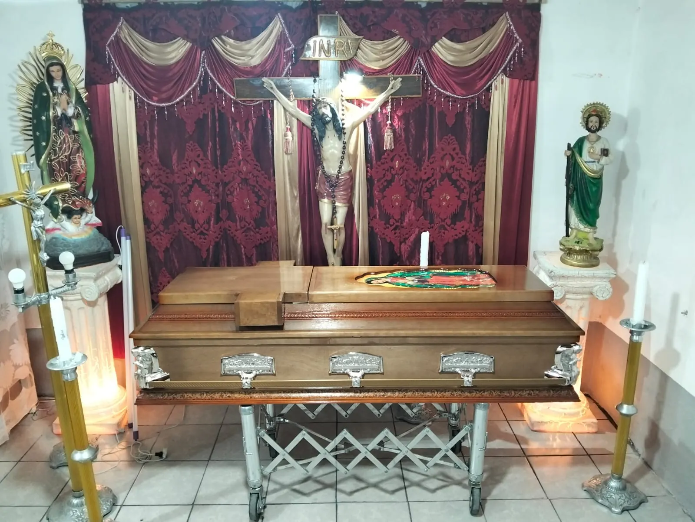
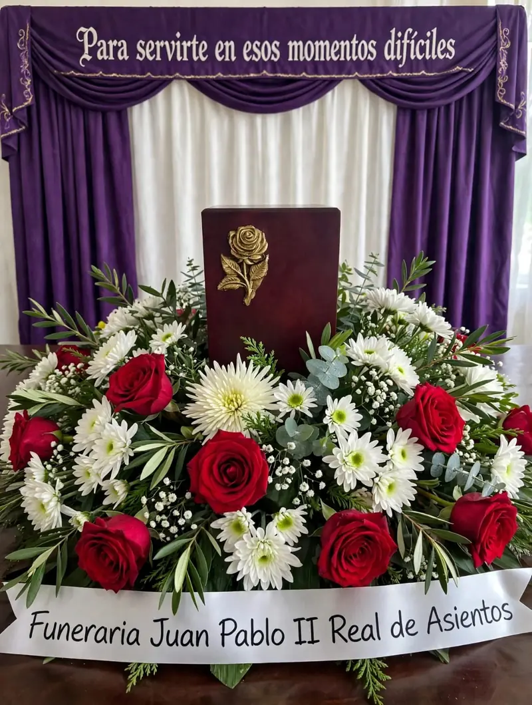
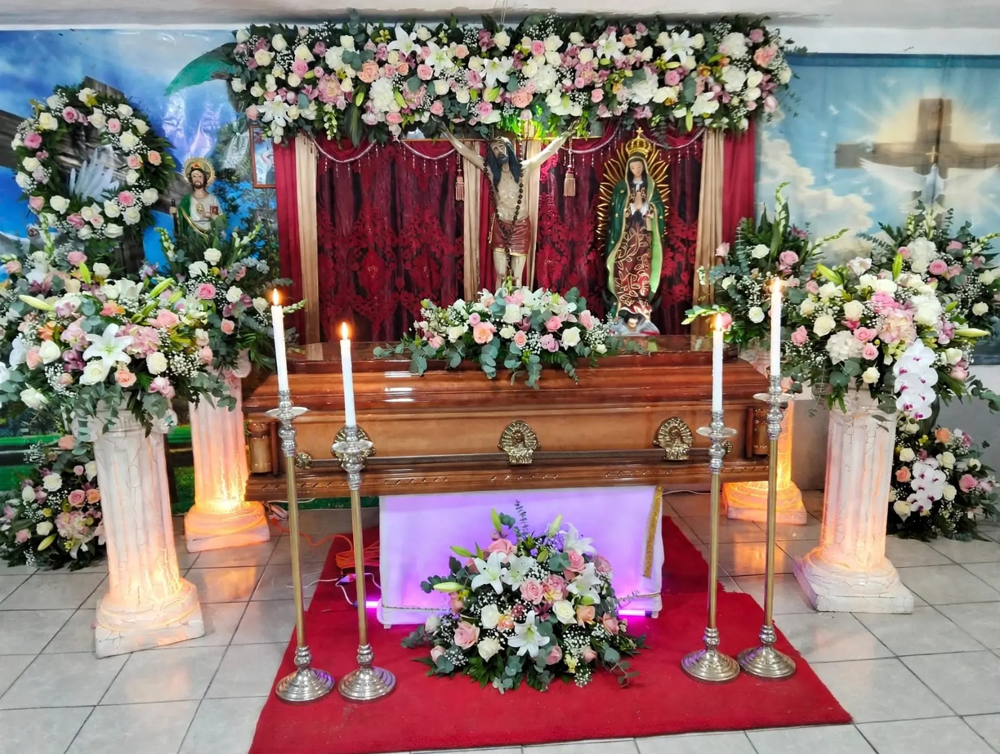
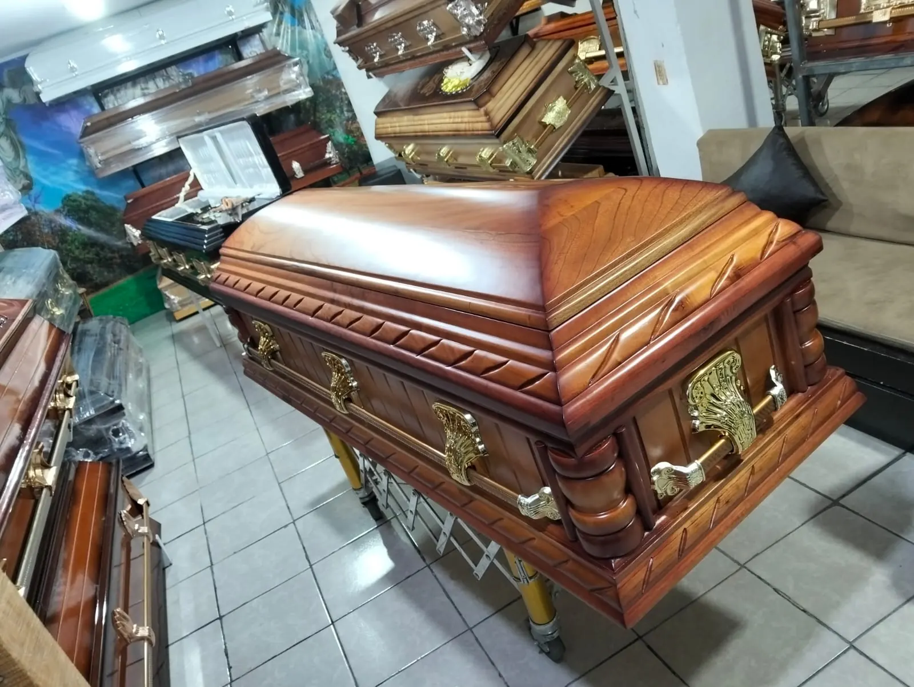
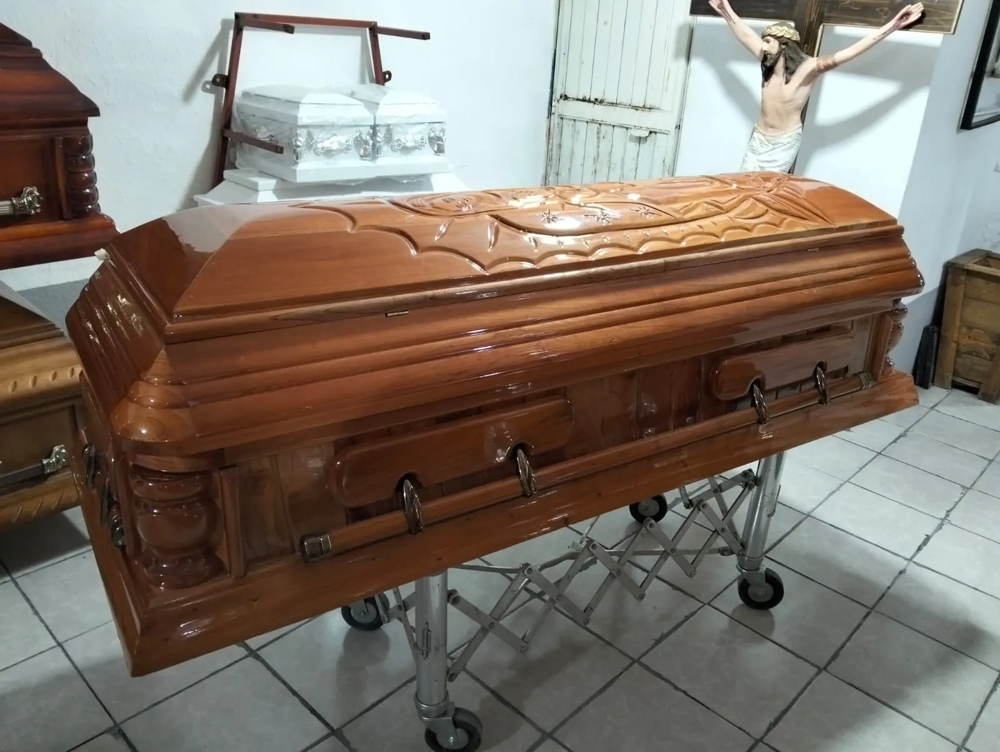
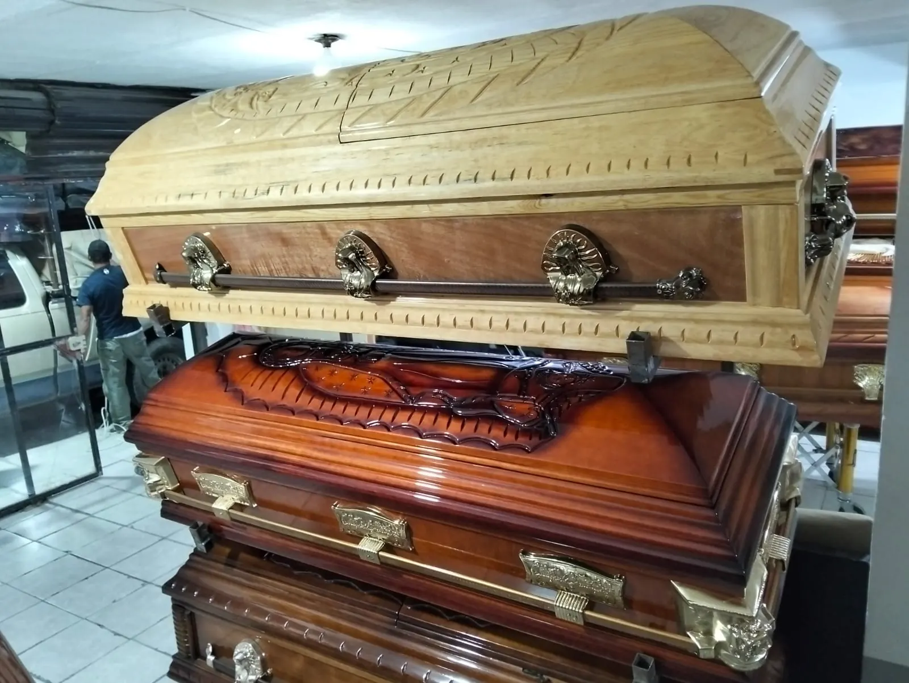
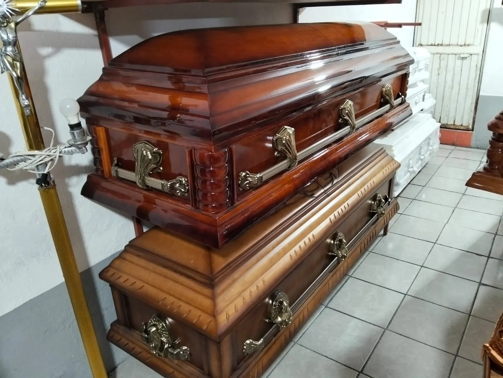
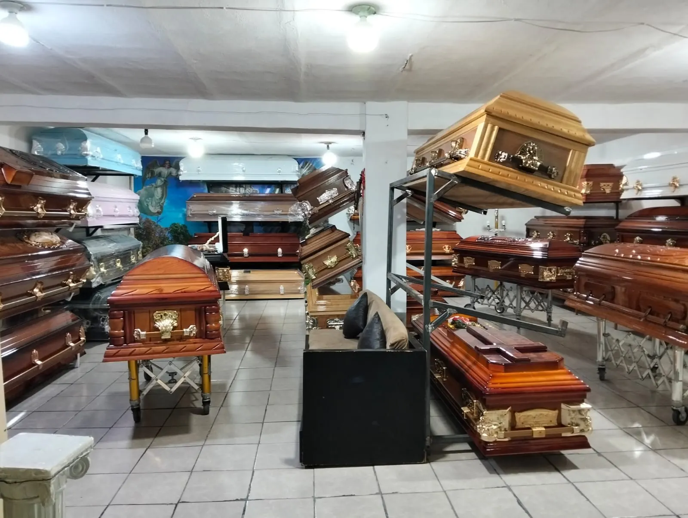
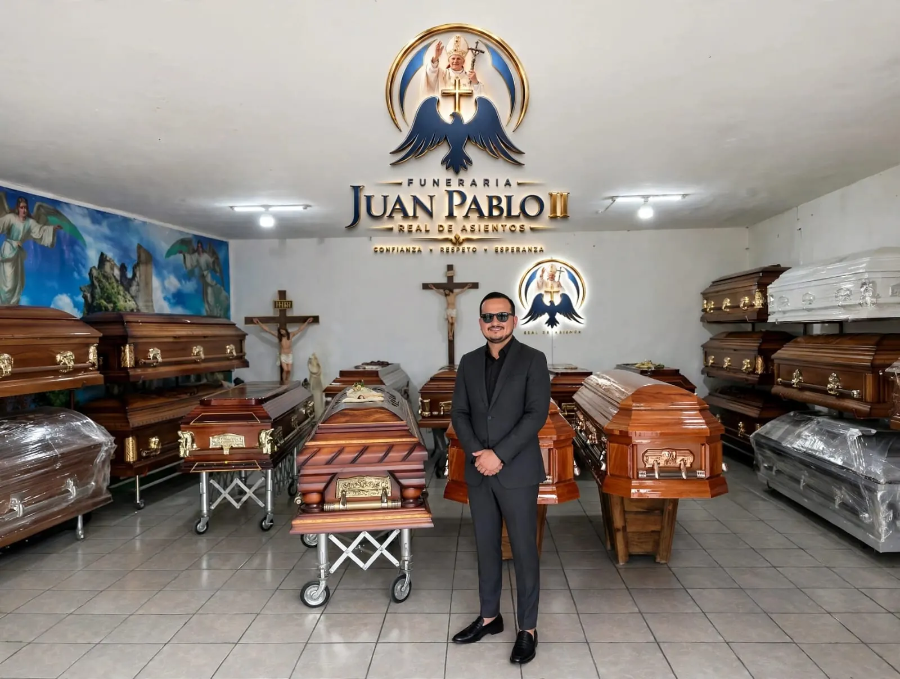

Confianza
Un trato claro y honesto desde la primera llamada. Sabes qué incluye cada servicio y cuánto cuesta antes de decidir.
Funeraria Juan Pablo II
Confianza · Respeto · Esperanza
0%
Servicio funerario las 24 horas
Atención las 24 horas con capilla de velación, traslado y asesoría legal. Real de Asientos y Cienega Grande.
Cuando alguien querido se va, lo único que debería importarte es despedirte en paz. Nosotros nos encargamos del resto, con respeto, con cercanía y a cualquier hora.
Un trato claro y honesto desde la primera llamada. Sabes qué incluye cada servicio y cuánto cuesta antes de decidir.
Cada familia y cada creencia merecen una despedida digna. Cuidamos los detalles para que todo transcurra con serenidad.
Acompañarte también es ayudarte a recordar. Una capilla cálida, flores, fotografía y recuerdos para honrar su historia.
Atendidos por el cantante Ivan Emanuel
Cada paquete reúne lo esencial para que no tengas que coordinar nada. Tú dedícate a despedirte.

Un espacio sereno para velar a tu ser querido, con luz cálida, cirios y flores.
Metálico en tu paquete. Conoce también modelos en madera fina.

Flores frescas para acompañar la despedida.
Nos encargamos del traslado, a la hora que lo necesites.
Te orientamos con los trámites para que nada se te complique.
Su imagen presente durante toda la velación.
Un detalle para quienes lo acompañan.
Atención para tus visitas, sin que te preocupes.
Comodidad para todos los que quieran acompañarte.
Cada familia es distinta. Cuéntanos qué necesitas y armamos el paquete que mejor se adapte a ti, sin presiones y sin letra pequeña.

Capilla de velación
Luz cálida, cirios y flores para velar con serenidad, rodeado de quienes más quieres.
En nuestra exhibición encuentras modelos en madera fina, metálicos y en acabado blanco. Te mostramos cada uno sin prisas.





Ven a conocer la exhibición, o pregúntanos por los modelos disponibles.
Quiero ver los modelosSin trámites confusos y sin que cargues solo con todo. Nosotros coordinamos cada detalle.

Contestamos las 24 horas, todos los días. Basta una llamada o un mensaje para comenzar.
Te explicamos las opciones, los costos y los trámites. La asesoría legal va incluida.
Traslado, capilla, ataúd, flores, carpa y sillas, y cafetería. Tú no tienes que coordinar nada.
Estamos contigo durante la velación para que te dediques a lo más importante: tu familia.
Lo que más nos preguntan las familias en los primeros momentos.
Sí. Nuestro servicio funciona las 24 horas. Llama o escribe por WhatsApp a cualquier hora y te atendemos.
Capilla de velación, ataúd metálico, arreglo floral, fotografía del finado(a), recuerdos, servicio de cafetería, carpa y sillas, asesoría legal y traslado.
Sí. La capilla de velación forma parte de nuestros paquetes, para que puedas despedir a tu ser querido con serenidad y rodeado de los tuyos.
Sí. El traslado y la asesoría legal están incluidos en el paquete, para que no tengas que coordinar nada por tu cuenta.
Tenemos dos sucursales: Calle Juventud #19, Real de Asientos, Ags. (Tel. 496 110 1690) y Olivares Santana #17, Cienega Grande, Ags. (Tel. 496 177 5950).
Claro. Contamos con una exhibición de ataúdes en madera y metálicos. Escríbenos o llámanos y te indicamos cómo visitarnos.
¿Tienes otra pregunta? Clic aquí y te respondemos
Dónde estamos
Abierto las 24 horas, todos los días.
Para servirte en esos momentos difíciles
Déjanos tus datos y un asesor te escribirá enseguida. Si es urgente, llámanos ahora.